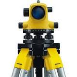
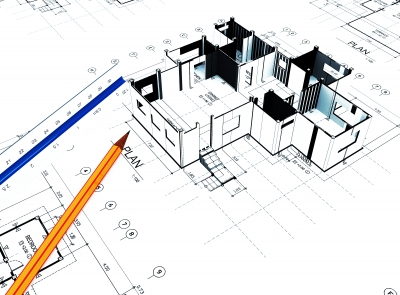

MD Walker & Associates
Consulting Engineering & Land Surveying

Land Surveying Services
Field & Office Services
From the air or field, MDWA uses state-of-the art electronic surveying equipment to get the information you need to buy, sell or develop land.
Whether it involves boundary, topographic or construction surveying, MDWA's Registered Professional Surveyors have the experience and latest technological equipment to produce precise and accurate surveys and relevent legal documents, to help optimize your land use opportunities.

Professional Engineering Services
Civil Engineering
From redirecting traffic to designing complex sewer and water collection and distribution systems, MDWA has helped numerous municipalities and companies shape their future growth and development.
Structural Engineering
Quality begins with a good foundation. MDWA will recommend the best materials and structural design to ensure that your facilities wear the tests of time, weather and nature. Whether your needs are a review of an existing structure or the design of a new one, MDWA has the tools and experience to move your project forward.